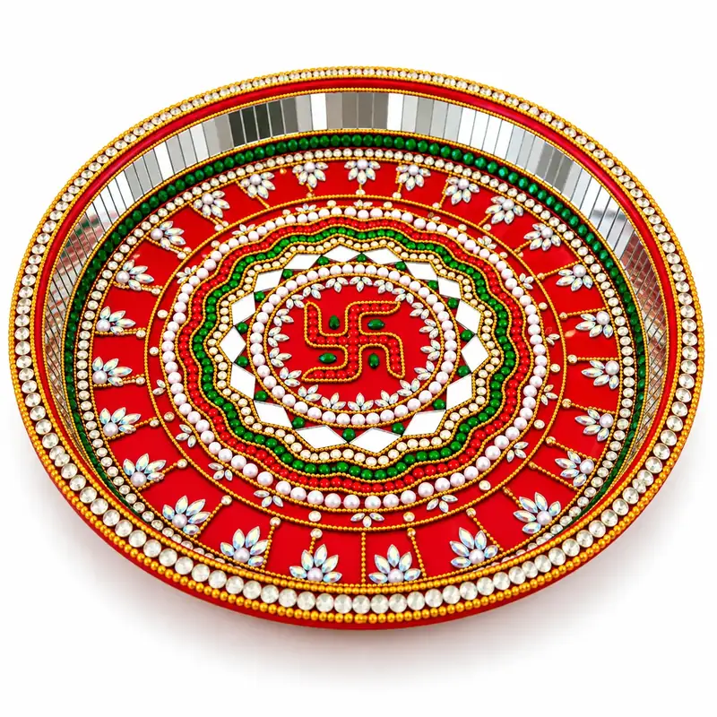

পূজার থালা ও বরণডালা সাজানোর সুন্দর আইডিয়া এবং আরতি থালার ডিজাইন
দুর্গাপুজোর অঞ্জলি হোক, কোজাগরী লক্ষ্মীপুজো, ভাইফোঁটা, দীপাবলি বা বিয়ের বরণডালা—একটি সুন্দর সাজানো পূজার থালা যেকোনো অনুষ্ঠানের শোভা দ্বিগুণ করে দেয়। কীভাবে সহজে আরতি থালা গুছিয়ে সাজাবেন আর কোন ডিজাইনগুলো সবচেয়ে বেশি পছন্দ করা হয়, চলুন জেনে নিই।

🌐 Language / भाषा चुनें: 🇮🇳 বাংলা (Bengali) 6 Indian Languages
1. আরতি বা বরণের থালা কীভাবে গুছিয়ে সাজাবেন?
পুজোর সময় তাড়াহুড়োয় থালায় সব জিনিস এলোমেলো হয়ে যায়। একটু গুছিয়ে রাখলে সাধারণ থালাও দেখতে দারুণ সুন্দর লাগে:
- মাঝখানে স্বস্তিক ও একপাশে প্রদীপ: থালার মাঝের স্বস্তিক বা মঙ্গল কলসের নকশা খোলা রেখে একপাশে নিরাপদ স্ট্যান্ডওয়ালা স্টিলের প্রদীপ বসান।
- সিঁদুর কৌটা ও চন্দন বাটি: ম্যাচিং দুটি ছোট বাটিতে চন্দন, সিঁদুর ও ধান-দূর্বা রাখুন; সাথে ঢাকনা দেওয়া স্টিলের সিঁদুর কৌটাও রাখতে পারেন।
- ফুল ও প্রসাদ: একদিকে তাজা গাঁদা, জবা বা গোলাপ ফুল এবং অন্যদিকে পরিষ্কার পাতায় মিষ্টি বা বাতাসা সাজিয়ে দিন।
- বিয়ে বা বড় উৎসবের সেট: বিয়ের বরণ বা উপহারের জন্য থালা, বাটি, প্রদীপ ও কলসের পুরো ম্যাচিং সেট নিলে দেখতে সবচেয়ে অভিজাত লাগে।
2. পূজার থালার ৪টি জনপ্রিয় ডিজাইন
বর্তমানে উৎসব ও বিয়ের অনুষ্ঠানে এই চারটি ডিজাইনের চাহিদা সবচেয়ে বেশি:
- লাল কুন্দন ও মিরর বর্ডার থালা: গাঢ় লাল রঙের ওপর সাদা মুক্তা আর চারধারে ছোট কাঁচের আয়না—লক্ষ্মীপুজো, ভাইফোঁটা ও দীপাবলির জন্য চিরসবুজ ডিজাইন।
- সোনালি স্বস্তিক ও স্টার লটকন থালা: গায়ে হলুদ, বরণডালা এবং আশীর্বাদের জন্য ঝুলন্ত রঙিন স্টার লটকন দেওয়া সোনালি থালা।
- মঙ্গল কলস মণ্ডলা থালা: মাঝখানে শুভ কলস আর চারপাশে মুক্তা-আয়নার খিলান—গৃহপ্রবেশ ও সত্যনারায়ণ পুজোর জন্য দারুণ মানায়।
- বড় ৪৪ সেমি (১২৮০ গ্রাম) রয়্যাল ব্লু ওয়েডিং থালা: বিয়ের তত্ত্ব সাজানো, শাড়ি-মিষ্টি বা শগুন দেওয়ার জন্য বড় ও ভারী স্টিলের থালা।
3. থালা কেনা ও ব্যবহারের সময় ৩টি জরুরি কথা
- মজবুত স্টিল বেছে নিন: প্লাস্টিক বা পাতলা থালা প্রদীপের তাপে নষ্ট হয়ে যেতে পারে; তাই ভারী স্টেইনলেস স্টিলের থালাই সবচেয়ে নিরাপদ।
- আগুন থেকে সাবধানতা: সব সময় স্টিলের বাটি বা স্ট্যান্ড দেওয়া প্রদীপে ঘি-সলতে জ্বালান যাতে পাশের মুক্তা বা লেসে আঁচ না লাগে।
- পুজোর পর যত্ন: পুজো হয়ে গেলে সিঁদুর বা তেলের দাগ নরম শুকনো কাপড়ে মুছে কাগজে জড়িয়ে তুলে রাখুন।
আপনার পুজোর জন্য হাতে তৈরি স্টিলের থালা বেছে নিন
যোধপুরের হাতে সাজানো স্টেইনলেস স্টিলের পূজার থালা (₹600 থেকে শুরু) এবং ৬-পিস কলস থালা সেট (₹1,600) সরাসরি WhatsApp-এ অর্ডার করুন:
সাধারণ কিছু প্রশ্ন
পুজো ও ভাইফোঁটার জন্য কোন মাপের থালা সবচেয়ে ভালো?
১২-ইঞ্চি মাপের স্টিল থালা সবচেয়ে সুবিধাজনক—এতে প্রদীপ, দুটি বাটি, ফুল ও মিষ্টি আরামে ধরে যায়।
থালার সাথে কি আলাদা করে সিঁদুর কৌটা বা প্রদীপ কেনা যাবে?
হ্যাঁ, ₹150 টাকায় ২-পিস স্টিলের সিঁদুর কৌটা, ₹100 টাকায় ২-পিস বাটি এবং ₹100 টাকায় স্টার প্রদীপ ও ধূপ স্ট্যান্ড আলাদা করে অর্ডার করতে পারবেন।
বিয়ে বা রিটার্ন গিফটের জন্য একাধিক পিস পাওয়া যাবে?
নিশ্চয়ই! WhatsApp-এ (+91 92162 89916) আপনার প্রয়োজনীয় সংখ্যা জানালে আমরা হোলসেল বা বাল্ক অর্ডারের ব্যবস্থা করে দিই।